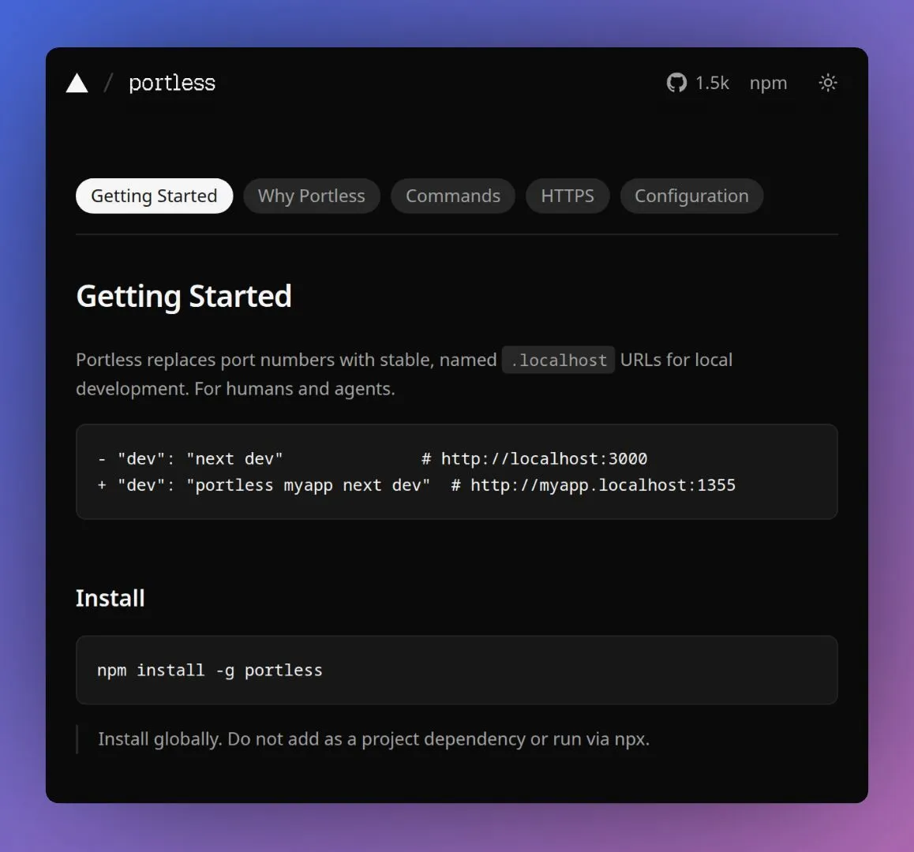

Portless gives local development readable URLs
Originally posted on LinkedIn, March 4, 2026.
Vercel released Portless, a new local development tool. Instead of addresses like localhost:3000, it lets you use readable names such as app.localhost or api.localhost.
Behind the scenes, Portless creates a local proxy that maps those names to the correct ports on your machine. You no longer need to remember port numbers, and the addresses stay readable and stable even when a port changes.
This also mirrors production environments that use subdomains, and it works better with automation and AI agents. Portless does not expose the application to the internet. It simply makes local development more organized.
